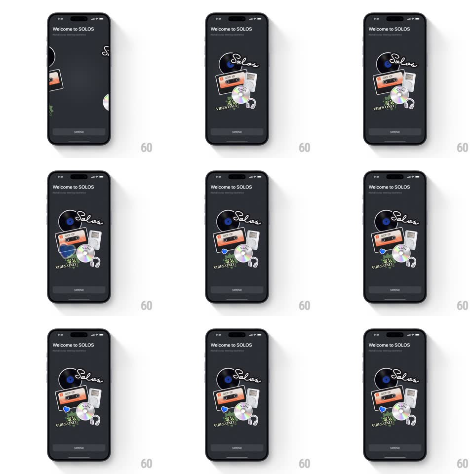

Media
Frame-by-frame

Rebuild this interaction 1:1: Solos' intro sticker pile - on the dark "Welcome to SOLOS" screen, music stickers (vinyl, cassette, CD, headphones, "VIBES ONLY" tag, blue heart, script logo) fly in from the edges one by one and assemble into a floating pile that gently bobs.

Rebuild this interaction 1:1: Solos' intro sticker pile - on the dark "Welcome to SOLOS" screen, music stickers (vinyl, cassette, CD, headphones, "VIBES ONLY" tag, blue heart, script logo) fly in from the edges one by one and assemble into a floating pile that gently bobs. ## Integration Integration: stack-agnostic spec - springs given as stiffness/damping, timed motions as duration + curve; map every value to your framework and animation library of choice. ## Scene A dark charcoal screen: "Welcome to SOLOS" title and subtitle top-left, empty middle, a "Continue" pill at the bottom. The stickers land in the middle: a vinyl record, an orange cassette, a CD, white headphones, a dark "VIBES ONLY" ticket, a small blue heart, and the white "Solos" script wordmark on top. ## Motion spec Pattern: sequential sticker assembly. - Each sticker flies in from a different off-screen edge (left, right, top - varied) along a slight arc, rotating as it travels (rotateZ from +/-40deg settling to its resting tilt of +/-10deg, 500ms, ease-out). - Stickers land one at a time, 180ms apart, each with a small impact squash (scale 1.1 -> 1, spring ~450/18, 200ms) and a soft shadow that fades in under it. - Stacking order builds the collage: vinyl at the back, cassette and CD mid, heart and headphones front, script wordmark last on top. - Once assembled, the whole pile idles: slow collective bob (translateY +/-6px, 3s) with individual stickers drifting a few px out of phase with each other. ## Calibration - The assembly takes ~2s total - quick enough to feel snappy, slow enough to read each sticker. - Resting tilts are deliberate (-8deg to +10deg) - a arranged collage, not a random heap. ## Reduced motion The pile fades in fully assembled. ## Don't miss - The script "Solos" wordmark lands last and sits highest - the brand signs the pile. - Stickers have white die-cut borders - they read as physical stickers on a dark table.